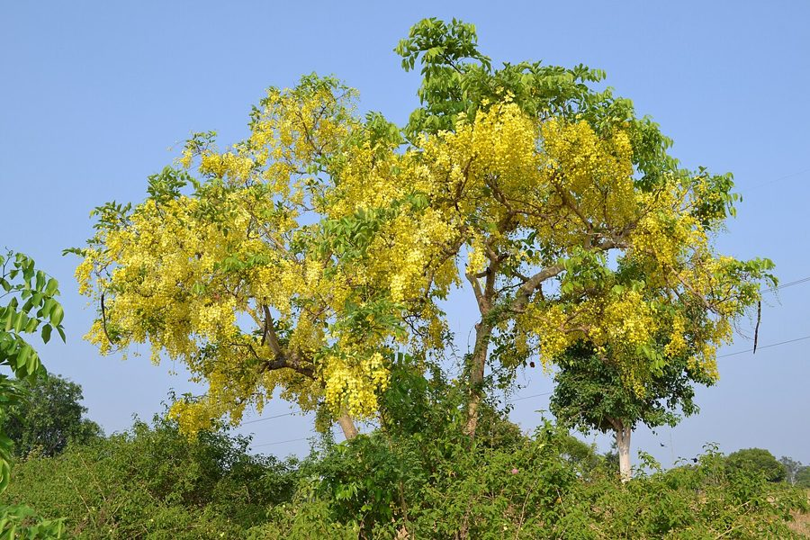

अमलतासAmaltas
Cassia fistula · Fabaceae · FLR-0038

- Scientific name
- Cassia fistula L.
- Family
- Fabaceae
- Hindi
- अमलतास
- Status here
- native
- IUCN
- LC
When to look कब देखें
Present all year.
अमलतास / Amaltas
Cassia fistula L. — Fabaceae
अमलतास — हमारे सड़कों के किनारे और बगीचों में पाया जाने वाला एक अत्यंत लोकप्रिय, मध्यम आकार का पर्णपाती वृक्ष है जिसे 'गोल्डन शॉवर' (Golden Shower) या भारतीय लबर्नम भी कहा जाता है। भीषण गर्मी के मौसम (अप्रैल-जून) में, जब यह पेड़ अपनी पत्तियां गिरा देता है, तब इसकी शाखाओं से लटकते हुए सुनहरे-पीले फूलों के बड़े-बड़े गुच्छे (cascading yellow racemes) नीचे की ओर झूलते हैं, जो एक अत्यंत मनमोहक दृश्य प्रस्तुत करते हैं। इसके फल लंबे, बेलनाकार और गहरे कत्थई रंग के होते हैं, जो कई महीनों तक पेड़ पर लटके रहते हैं और स्थानीय लोग इसे 'बंदर की लाठी' भी कहते हैं। आयुर्वेद में इसके फल के गूदे का उपयोग एक सुरक्षित और प्राकृतिक रेचक (laxative) के रूप में किया जाता है।
Quick Identification त्वरित पहचान
| Feature | Description |
|---|---|
| Size & Shape | Medium-sized tree (10–15 m tall) with a spreading, open, and airy crown |
| Bark | Smooth, ash-grey bark on young trees, becoming rough, brown, and scaly on older trunks |
| Leaves | Large, pinnately compound leaves (15–40 cm long) with 4–8 pairs of large, smooth, ovate leaflets |
| Flowers | Bright yellow flowers arranged in long, pendulous, drooping clusters (30–50 cm long) |
| Fruit & Seeds | Long, dark brown or blackish cylindrical woody pods (30–60 cm long), containing flat seeds embedded in a sticky black pulp |
Field tip: Look for long, drooping, string-like clusters of bright yellow flowers in pre-monsoon summer (April–June). Even when the tree is bare of flowers and leaves, the long, dark, stick-like cylindrical pods hanging vertically from the branches are unmistakable.
Morphology आकारिकी
Biometrics (typical measurements in the Gangetic plain):
| Feature | Measurement |
|---|---|
| Tree height | 10–15 m |
| Leaf length | 15–40 cm |
| Leaf width | 4–8 cm (leaflets) |
| Flower diameter | 4–7 cm |
| Fruit dimensions | 30–60 cm long, 1.5–2.5 cm diameter |
Habit: Medium-sized deciduous tree with a straight trunk and slender, spreading branches. Canopy is light and open, casting a dappled shade.
Bark: Smooth, pale ash-grey on young trees, turning dark brown, rough, and peeling in small woody flakes in mature specimens.
Leaves: Alternate, pinnately compound. Petiole is 15–40 cm long. Each leaf has 4–8 pairs of leaflets, 7–15 cm long and 4–8 cm wide, ovate-oblong with pointed tips, smooth and bright green above, paler beneath.
Flowers: Large, bright yellow, arranged in drooping, lax racemes 30–50 cm long. Each flower is 4–7 cm across, with 5 bright yellow petals and 10 stamens, the three lower ones being long and curved.
Fruit & Seeds: The fruit is a long, dark brown, woody, cylindrical pod, 30–60 cm long and 1.5–2.5 cm in diameter. The pod is divided internally into numerous horizontal compartments, each containing a single flat, shiny, light brown seed embedded in a dark, sticky, sweetish pulp.
Ecological Role पारिस्थितिक भूमिका
Pre-monsoon pollinator refuge. Flowering at the peak of the dry summer, Amaltas provides a crucial resource.
- Pollinator magnet: The large yellow blooms attract a wide range of large bees (such as carpenter bees and giant honey bees) and butterflies, serving as a vital pollen source when other flora are dry.
- Larval host plant: It is a major larval host plant for several butterfly species, including the Emigrants (Catopsilia spp.) and the Grass Yellows (Eurema spp.).
- Dappled shelter: Its light canopy moderates the soil temperature, providing shelter for ground insects and lizards during summer.
Life Cycle / Phenology जीवन चक्र
- Germination: Seedlings emerge during the monsoon; seeds have a hard coat and often require abrasion or moisture to germinate.
- Growth: Fast initially, settling into a moderate rate, highly tolerant of drought and poor soils.
- Leaf shedding: Leaves are shed in March–April during the dry winter end.
- Flowering: April to June, with cascades of yellow blooms appearing just before new leaves flush.
- Fruiting: Cylindrical pods develop in late summer, turning dark brown and persisting on the tree for up to a year.
Host Plants or Prey आहार
Prey / Beneficiaries:
- Insects: Hosts larvae of the Common Emigrant (Catopsilia pomona) and Mottled Emigrant butterflies. Pollinated by carpenter bees (Xylocopa spp.) and honeybees.
- Birds: Small birds search the foliage for caterpillars.
- Soil: Leguminous roots contribute to soil microbial health.
Predators / Natural Enemies शत्रु
- Larvae: Piercing caterpillars can completely defoliate young trees during the monsoon.
- Mammals: Monkeys occasionally break the pods to eat the pulp, but livestock generally avoid the leaves.
- Insects: Stem borers target stressed or damaged branches.
Agricultural / Human Relevance कृषि और मानव संबंध
Traditional and Ethnobotanical Use
Amaltas is highly valued in the traditional medicine and rural life of eastern Uttar Pradesh:
- Specific medicinal preparations:
- Constipation & Laxative: The dark, sticky pulp from the mature cylindrical pods (known as Amaltas Guda) is boiled with water or taken with warm milk. It acts as a safe, mild laxative suitable for children and elderly individuals.
- Skin infections & Ringworm: Fresh leaves are crushed into a fine paste and applied topically to treat ringworm, eczema, and skin eruptions.
- Fever & Cold: A decoction of the root bark is prepared and taken orally to reduce high fever and treat common respiratory congestion.
- Religious or cultural significance in eastern UP: The bright yellow flowers are offered during Lord Shiva worship and are associated with the arrival of the Hindu New Year (Chaitra Navratri / Vishu).
- Traditional ecological or seasonal knowledge: The flowering of Amaltas in late spring is a reliable traditional indicator of the onset of the pre-monsoon season. The persistence of the old cylindrical pods (Bandarlathi / monkey's stick) is used by children in rural games.
Expected Locally स्थानीय रूप से अपेक्षित
Not a field record. Written from published accounts for eastern Uttar Pradesh. No confirmed local sighting yet — if you have seen it, that is what the atlas needs.
अभी तक स्थानीय पुष्टि नहीं। यह विवरण प्रकाशित स्रोतों से है, किसी अवलोकन से नहीं।
Commonly planted as an ornamental roadside and garden tree in Basti, Khalilabad, and Ayodhya. The golden cascades are a striking feature along the streets during the hot months of May and June. In rural areas, the long woody pods are frequently collected by local children and used as play-sticks (bandarlathi).
Distribution वितरण
Global range: Native to the Indian subcontinent and adjacent regions of Southeast Asia, including Pakistan, India, Nepal, Sri Lanka, Bangladesh, and Myanmar. Widely planted as an ornamental tree in tropical regions worldwide.
In India: Widespread in deciduous forests and plains state-wide, up to 1,200 m in the foothills.
In Uttar Pradesh: Abundant resident tree in all districts, cultivated in parks and roadside avenues.
In Basti district / eastern UP: Highly common along avenues, canals, and town gardens.
Research Questions शोध प्रश्न
Anyone can investigate these | कोई भी इन प्रश्नों की जाँच कर सकता है
- Which butterfly species are most commonly observed laying eggs on Amaltas leaves in your area? — Search the underside of leaves for eggs and caterpillars.
- How does the timing of Amaltas flowering correlate with the arrival date of the Southwest Monsoon? — Record first-bloom dates and monsoon onset dates over several years.
- What is the germination success rate of Amaltas seeds under natural conditions? — Monitor seeds under parent trees during the monsoon.
- How do carpenter bees extract pollen from the curved stamens of the flowers? / बढ़ई मक्खियाँ (carpenter bees) अमलतास के मुड़े हुए पुंकेसरों से पराग कैसे निकालती हैं? — Record and observe bee behavior on flowers.
- How long do mature Amaltas pods persist on trees before falling naturally? — Monitor marked pods across seasons.
Similar Species मिलती-जुलती प्रजातियाँ
| Species | How to tell apart | हिंदी |
|---|---|---|
| Pink Shower Tree (Cassia javanica) | Flowers are pale pink or peach; leaflets are smaller; introduced ornamental | गुलाबी अमलतास — गुलाबी फूल |
| native Babool (Vachellia nilotica) | Bipinnate compound leaves; yellow flower balls; has long white thorns | बबूल — कांटेदार, छोटे पत्ते |
| Palash (Butea monosperma) | Crooked trunk; large leathery trifoliate leaves; bright orange-red parrot-beak flowers | पलाश — नारंगी फूल |
Field rule: Medium-sized tree with pinnately compound leaves, long cascading racemes of bright yellow flowers in summer, and dark cylindrical woody pods persisting for months identify the Amaltas tree.
Taxonomy & Classification वर्गीकरण
Original description. Carl Linnaeus described the Amaltas tree as Cassia fistula in 1753 in his work Species Plantarum (Vol. 1, p. 377). The type locality was India. The genus name Cassia is derived from the Greek kassia, a name for aromatic bark plants, and fistula is Latin for tube or pipe, describing the long cylindrical pods.
Subspecies. Monotypic.
Family and order placement. Placed in the order Fabales, family Fabaceae (pea family), subfamily Caesalpinioideae.
Phylogenetic notes. Cassia fistula is the type species of the genus Cassia. It belongs to a lineage that diverged early from other legumes, characterized by open, non-papilionaceous flowers.
IUCN status rationale. Evaluated as Least Concern (LC). Extremely common, widely cultivated, and stable across its large global range, facing no threats.
Photo Gallery फोटो गैलरी
References संदर्भ
- Linnaeus, C. (1753). Species Plantarum. Laurentius Salvius, Holmiae, p. 377. [original description]
- Gamble, J. S. (1922). A Manual of Indian Timbers: An Account of the Growth, Distribution, and Uses of the Trees and Shrubs of India and Ceylon. Sampson Low, Marston & Co., London.
- Brandis, D. (1906). Indian Trees. Archibald Constable & Co., London.
- Sahni, K.C. (1998). The Book of Indian Trees. Oxford University Press, New Delhi.
- IUCN Red List (2024). Cassia fistula. Ver. 2024.
- GBIF Occurrence Data — Cassia fistula, Uttar Pradesh (2010–2025).
Source file: species/flora/trees/amaltas.md